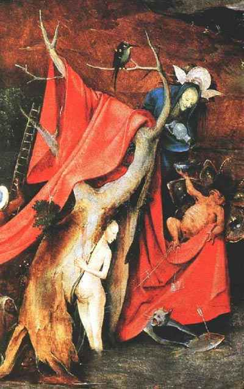
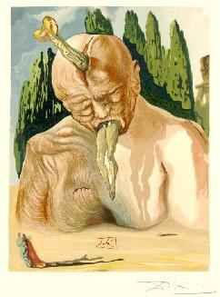
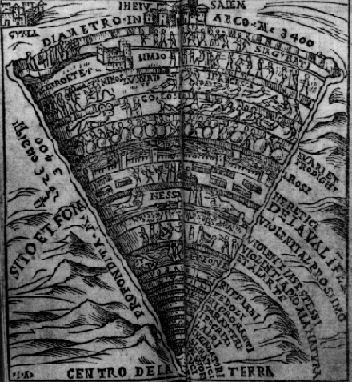
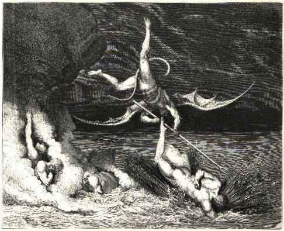

Hell
Hell

Once upon a time, there was the world, and it was good. Then people got all pissed off about everything, and there was violence and sin, and that was bad. Then people decided they needed a device to stop people from doing so much violence and sin, and there was Hell, and it was good.
Hell is the ultimate deterrent an eternity of pain and suffering. You can't come up with a much more brutal retribution than that. The only catch is that the deterrent only works when people a) believe in it, and b) fear it so much that they lay off the violence and sin.
There are a number of problems selling Hell to the public at large. For one thing, eternity is a difficult concept to get your head around. For another, everyone has a different idea about how the cosmos works morally. For Hell to succeed, it has to be horrific beyond belief, and ideally it needs to be drilled into the heads of children at a very early age, so that the fear will stick even after the intellect has grown past the concept.
The earliest concepts of Hell were less punitive than nihilistic. Early humans had to come to terms with the concept of death, and a number of ideas were developed along these lines.
The most optimistic viewpoint was reincarnation, present in many cultures around the world, but the ancient Jews were not the most optimistic lot, so they added a layer of unpleasantness to the Great Wheel of Life.
Before being reincarnated, they believed, the soul made a pit stop in Sheol, a depressing underground place where every day is Monday, and it always looks like it's just about to rain but it never quite does. No eternal pit of fire, but the good times are definitely over. Some Jewish sects believed that reincarnation came after a spell in Sheol, others just kind of left souls there to rot (or whatever souls do).

Other early religions had various concepts of a bad place where dead people hang out. The ancient Hindus believed in Hell before switching over to reincarnation. Egyptians believed in an underworld, where souls traveled through trials before returning to their bodies. The Romans and Greeks shared a version of Hell called Hades, which heavily influenced later renditions. But the Judeo-Christian Hell was the one that really stuck.
The Jewish Sheol eventually evolved into Gehenna, which roughly equates to purgatory a place where souls are punished or cleansed of their sins but the concept was never "proven" as an established teaching, leaving the matter of an afterlife largely to individual believers.
The coming of the Christians changed all that. When Jesus Christ arrived on the scene, a new set of contradictions arose. On the one hand, Jesus taught of God as a loving father figure, in sharp contrast to the vengeful God of the Old Testament. But love and hate are a double-edged sword. Although the Christian God had a whole lotta love on hand for believers, sinners were condemned to the fiery pit.
As the Christian church became more complicated, so too did the vision of Hell. By the middle ages, Hell was a rather well-defined place. The ultimate map of Hell was drafted by Dante in his epic poem Inferno, part of his inappropriately named "Divine Comedy."
Dante famously divided Hell into nine concentric circles of increasing nastiness, behind a gate with the logo "Abandon Hope, All Ye Who Enter Here":
- Circle One: Almost every student struggling through a Catholic school education inevitably arrives at the theological question: What happens to innocent people who are not baptized through no fault of their own? The Church invented "limbo" for this concept; Dante made it the first circle of Hell, a sort of Hell Lite. The first circle of Hell offers a kinder, gentler repose for noble pagans born before Christ and other generally cool historical figures who happen not to be Christians, such as Homer, Ovid, Socrates and presumably figures like Ghandi and maybe Malcolm X. Captives in the First Circle of Hell were subjected mostly to the ravages of generalized anxiety disorder without the benefit of Paxil but with all the side effects (nausea, asthenia, constipation, infection, dry mouth, yawn, diarrhea, sweating, decreased appetite, sleepiness, dizziness, insomnia, tremor, nervousness, and sexual side effects).

- Circle Two: Lust! As the most understandable of the major sins, lust only makes circle two of Hell, where lustful lovers are tossed about by stormy winds and forbidden from making wild monkey love. It's unclear whether they're allowed to jerk off. Home to Cleopatra, Tristan and Isolde, the Marquis de Sade and eventually Larry Flynt.
- Circle Three: Gluttons live here, and are punished for their gluttony by being subjected to bad weather. Seasonal affective disorder is a bitch! There's also a big dog. Captives include Chris Farley and Divine.
- Circle Four: You don't hear a lot about avarice these days, but the medieval mindset classified it as a major sin. The greedy are condemned here to working for the man every night and day, doing pointless and menial tasks. Future residents include Bill Gates and Martha Stewart.
- Circle Five: The angry spend eternity duking it out here, naked in a vast river of jello (or possibly water, my Italian is a bit rusty). Look for Sean Penn, Dick Cheney and Jerry Falwell.
- Circle Six: This circle of Hell is filled with "heretics," by which Dante mostly means Muslims (though to be fair, Hell has several Popes in residence as well). This circle would technically also include figures like Aleister Crowley, Jack Parsons, Martin Luther and Rael. Rumor has it John Ashcroft is planning random sweeps through the Sixth Circle in search of Terrorists. Everyone in the Sixth Circle is just an ordinary guy, BURNING DOWN THE HOUSE.
- Circle Seven: Ah, violence! You gotta love violence! Dante classified three kinds of violence against self, against others and against God. Inhabitants spotted by Dante included Attila the Hun and Alexander the Great. Since this category includes warmongers, George W Bush is a potential future inmate. Dante's definition of "violence against God" inexplicably includes sodomy, which he classes as a more serious crime than murder, so the Seventh Circle could potentially host Robert Mapplethorpe and Oscar Wilde, who would be flayed on burning sands, while Adolf Hitler would merely be turned into a tree for the crime of Suicide. There is no justice.
- Circle Eight: If the Seventh Circle offended your sensibilities, the Eighth is simply baffling. In the next worst circle of Hell, the sufferings of the damned would be inflicted on those who have committed the following sins (all of which are deemed more evil than murder and warmongering). In order of increasing severity: Pandering, flattery, hypocrisy, fortune telling, theft, giving bad advice, instigating trouble, alchemy, impersonation, counterfeiting, lying, and being a giant.
- Circle Nine: The Ninth Circle is for betrayers of every stripe, with all the big names in betraying thoroughly represented. Judas, Brutus, Cassius, Benedict Arnold, John Wayne Bobbit, Big Pussy from the Sopranos, Cain, Lando Calrissian, Jim Bakker, Richard M. Nixon, the Rosenbergs, Randy Savage, and finally, frozen in hell's center, Satan himself. Judas, Cassius and Brutus are actually being eternally chewed by Satan, who has an intense dislike for Shakespearean characters.
In his play "No Exit," Jean Paul Sartre said simply that "hell is other people," while Pat Benatar claims "hell is for children." This no doubt provides a meaningful highlight to some of the major differences between Americans, Italians and the French. Just don't ask what.

Hell
|